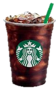

Cold brew:
Iced coffee is known worldwide and, abroad, it is called cold brew. Its origins are not known for sure, but coffee historians attribute its creation to the Dutch – back in the 16th century.
Know More PurchaseCappuccino:
Cappuccino is a popular coffee drink that if originated in Italia and if too spread all over the world.
Know More Purchase